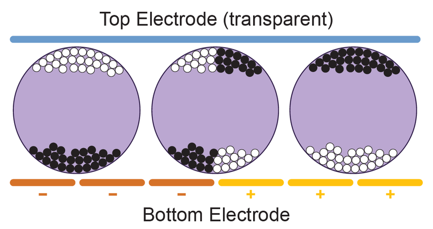
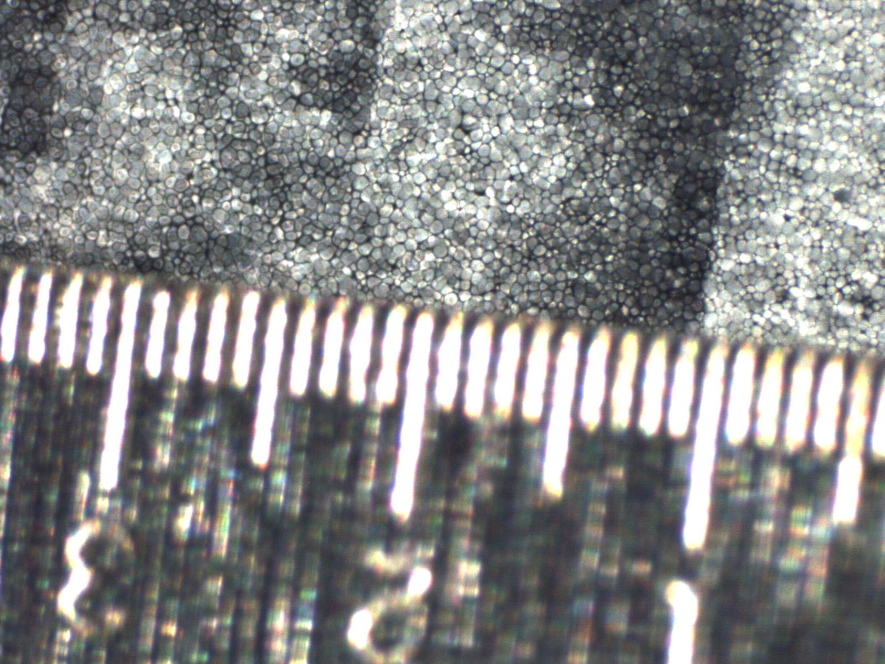
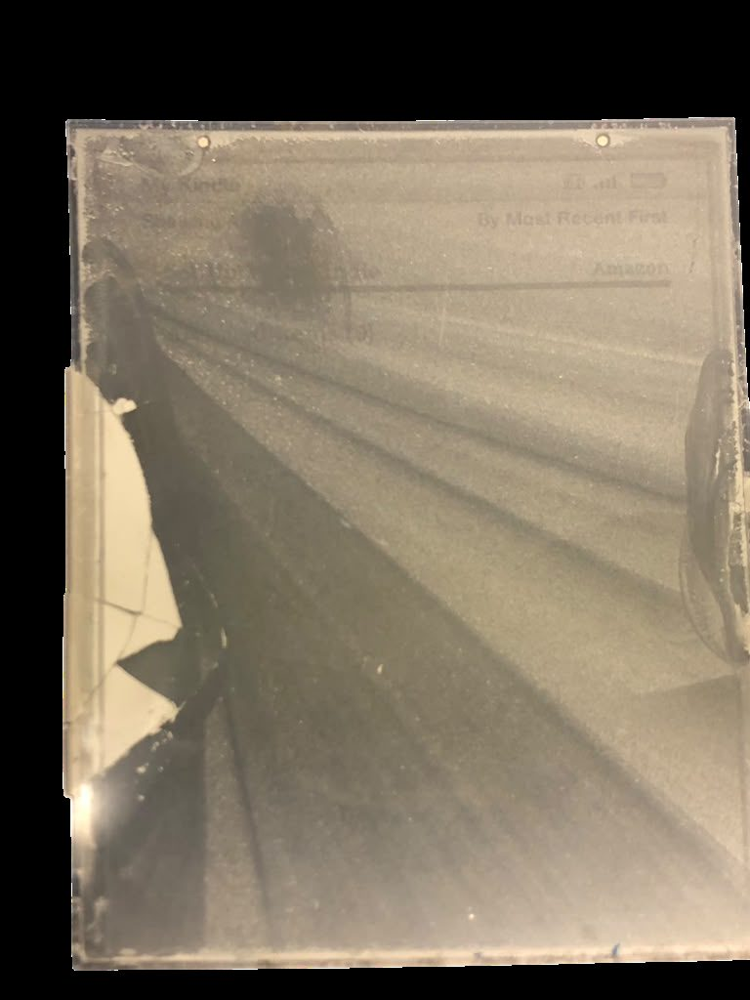
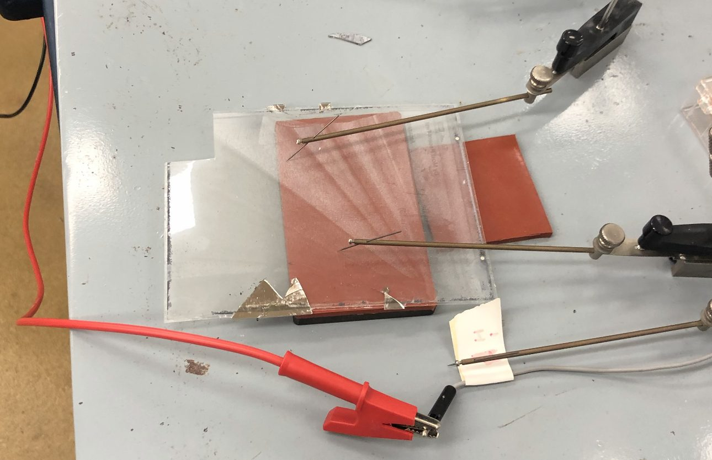

Kindle 101
A screen that never dies
A Kindle's screen doesn't glow like other popular devices. It uses an electrophoretic (e-ink) display. Millions of microcapsules sit between two electrodes, and each capsule holds positively and negatively charged black and white pigment particles in a clear fluid. When a voltage is applied across a capsule, one colour of particle is pulled toward the top of the capsule, so that spot shows black or white.
Power is only needed to switch a capsule. Once the particles have moved they stay put with no power at all, which is why a page of text costs almost nothing to display and a Kindle battery lasts for weeks.


The screen
A conductor you can see through
For the circuit in Figure 1 to work, the top electrode has to conduct electricity while letting you see the ink underneath. The Kindle does this with a thin plastic film coated in indium tin oxide (ITO). The coating is invisible, but it adds a conductive layer that closes the circuit across every capsule.

Is there really indium in it? (XRF)
The usual ITO recipe is about 90% indium oxide and 10% tin oxide by weight, which works out to roughly 74% indium, 8% tin and 18% oxygen [7]. We scanned the coated film twice with the X-ray fluorescence (XRF) analyser, expecting indium to stand out.
| Element | Scan 1 (%) | Scan 2 (%) |
|---|---|---|
| Si (silicon) | 9.1 | 65.4 |
| Sc (reported); likely Ca | 51.4 | 13.0 |
| P (phosphorus) | 21.2 | 6.0 |
| S (sulfur) | 4.6 | 11.8 |
| Al (aluminium) | 13.4 | 3.5 |
| Mn (manganese) | 0.2 | 0.3 |
| In (indium) | — | — |
No indium appeared. The two scans are completely different, and they seem like the material underneath the coating, not the coating itself. The XRF signal goes far deeper than a coating only a few nanometres thick. The "scandium" is almost certainly calcium, a false reading due to the two elements' X-ray peaks overlapping. As a check, we scanned a piece of confirmed ITO coated glass from the materials science lab, and it didn't show indium either. Our conclusion is that the XRF can't detect a coating this thin, but it doesn't mean the indium is missing.
Is it conductive? (two-point probe)
To check that the coating conducts, we placed the film on a two-point probe connected to a power supply. Current flowed through the film, which confirms there is a conductive layer on the plastic even though we can't see it.

Structure and bonding: why ITO?
ITO’s base is indium oxide (In2O3), an ionic–covalent compound with a cubic crystal structure. Its usefulness comes from two properties that normally don't go together:
- Transparency. In2O3 has a wide optical band gap of about 3.5 eV. That is the minimum photon energy needed to push an electron across the gap and absorb the light. Visible-light photons carry only about 1.6–3.1 eV, so they pass straight through [21].
- Conductivity. In ITO, some In3+ ions in the crystal are replaced by Sn4+ ions, in a process called tin doping. Each tin ion brings one extra electron that the lattice doesn't need for bonding, and that free electron can carry current. The indium-to-tin ratio is tuned to give enough free electrons to conduct without making the film cloudy [22].
The element indium has its own story. As a pure metal it forms a body-centred tetragonal crystal held together by fairly weak metallic bonds, with a cohesive energy of about 2.52 eV/atom compared with 3.49 eV/atom for copper [23]. Weak bonds explain why indium is so soft and melts so easily.
Once indium is locked into the oxide ceramic, those metallic properties disappear. It is the oxide's wide band gap and tin's extra electrons that make the screen work.
Sources
- Cross-sectional diagram of e-ink microcapsules, ResearchGate. researchgate.net
- Indium tin oxide, Wikipedia. en.wikipedia.org/wiki/Indium_tin_oxide
- Walsh, A., Da Silva, J. L. F., & Wei, S.-H. (2011). Multi-component transparent conducting oxides: Progress in materials modelling. Journal of Physics: Condensed Matter, 23, 334210. arXiv:1101.5720
- González, G. B., Mason, T. O., Quintana, J. P., Warschkow, O., Ellis, D. E., Hwang, J.-H., Hodges, J. P., & Jorgensen, J. D. (2004). Defect structure studies of bulk and nano-indium-tin oxide. Journal of Applied Physics, 96(7), 3912. doi:10.1063/1.1783610
- KnowledgeDoor. Cohesive Energy. The Elements Handbook. knowledgedoor.com
- Ansys Granta EduPack, record for indium (Young's modulus).